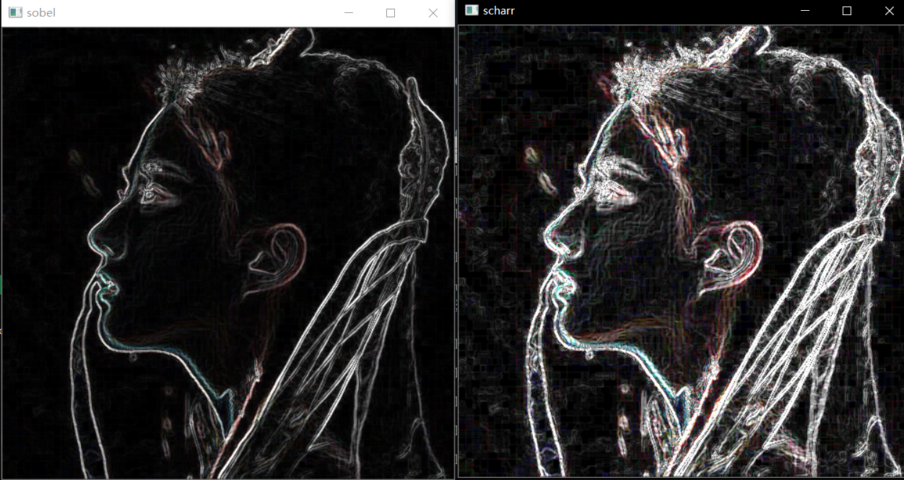
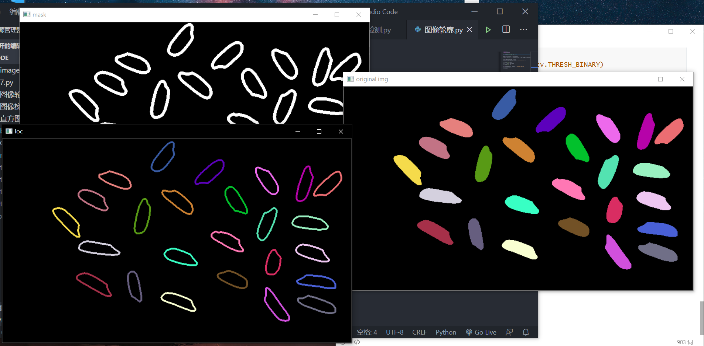

1.python基础
- 数据类型和变量
- 函数
- 切片、生成器等高级特性
- 面向对象编程
- numpy、pandas、matplotlib等库的学习
总结：python基础掌握良好
2.opencv
- 图像操作
def access_pixels(image):
height = image.shape[0] # 图像高度
width = image.shape[1] # 图像宽度
channels = image.shape[2] # 图像通道数
for row in range(height):
for col in range(width):
for c in range(channels):
image[row, col, c] = 255 - image[row, col, c]
cv2.imshow("pixels_demo", image)- 数值、逻辑计算
def logic_demo(): # 逻辑非运算
image = cv.imread("./images/CrystalLiu2.jpg")
cv.imshow("image1", image)
dst = cv.bitwise_not(image)
cv.imshow("logic_demo", dst)
def contrast_brightness_demo(image, c, b): # 调整对比度
cv.imshow("origion picture", image)
h, w, ch = image.shape
blank = np.zeros([h, w, ch], image.dtype) # 纯黑背景
dst = cv.addWeighted(image, c, blank, 1-c, b) # 通过和纯黑背景加权运算得到对比度改变
cv.imshow("contrast_brightness_demo", dst)- 色彩空间
def color_space_demo(image):
gray = cv.cvtColor(image, cv.COLOR_BGR2GRAY) # 转化为灰度图像
cv.imshow("gray", gray)
hsv = cv.cvtColor(image, cv.COLOR_BGR2HSV) # 转化为HSV图像
cv.imshow("hsv", hsv)
yuv = cv.cvtColor(image, cv.COLOR_BGR2YUV) # 转化为YUV图像
cv.imshow("yuv", yuv)- 几何变换
import cv2
import numpy as np
#读取图片
src = cv2.imread('cat.jpg')
def resize_demo(src):
rows=src.shape[0]
cols=src.shape[1]
#图像缩放 dsize(列,行)
result = cv2.resize(src, (int(cols*0.6), int(rows*1.2)))掩模(mask)
计算结果=cv2.add(参数1, 参数2, mask)
当含有掩模参数时，操作只会在掩模值为非空的像素点上执行，并将其他像素点的值置为0.
图像梯度
1.Sobel算子
1.1 理论
将Sobel算子与原始图像src进行卷积计算，计算某像素点的导数
dst=cv2.Sobel(src, ddepth, dx, dy) ...
1.2 ddepth
如果将ddepth设置为1，则处理结果与原图像保持一致，但计算可能得到负数，可用rst=convertScaleAbs(img)将其转化为正值。
1.3 方向
x方向梯度：dx=1,dy=0
y方向梯度：dx=0,dy=1
x方向与y方向的边缘叠加：分别获取x,y方向边缘图并用addWeighted()函数叠加
实例
import cv2 as cv
import numpy as np
a = cv.imread("images/Crystal.jpg")
sobelx = cv.Sobel(a, cv.CV_64F, 1, 0) # x方向边缘
sobelx = cv.convertScaleAbs(sobelx)
sobely = cv.Sobel(a, cv.CV_64F, 0, 1) # y方向边缘
sobely = cv.convertScaleAbs(sobely)
dst = cv.addWeighted(sobelx, 1,sobely,1, 0)
# dst[] = sobelx[] * 1 + sobley[] * 1 + 0
cv.imshow("x", sobelx)
cv.imshow("y", sobely)
cv.imshow("dst", dst)
cv.waitKey()Sobel与Schaar算子的比较

Canny边缘检测
1.去噪
应用高斯滤波去噪，通常一个5*5的核满足大多数的情况。
2.计算梯度的幅度与方向
梯度的方向总是与边缘垂直的，通常就近取值为水平，垂直，对角线等8个不同的方向。
$$
G = \sqrt{G_x^2+G_y^2}
$$
$$
\Theta = atan2(G_x,G_y)
$$
3.非极大值抑制
4.确定边缘
函数用法
edges = cv.Canny(image, threshold1, threshold2[, apertureSize[,L2gradient]])- edges为计算得到的边缘图像
- image为8位输入图像
- threshold1,threshold2分别为第一、第二个阈值
- apertureSize为Sobel算子孔径大小
- L2gradient为梯度幅度的标识。
$$
norm=
\begin{cases}
|dI/dx|+|dI/dx| ,\ L2gradient\ =\ False\
\sqrt{(dI/dx)^2+(dI/dy)^2}, \ L2gradient \ = \ True
\end{cases}
$$
实例：
def canny(image):
r1 = cv.Canny(image, 128, 200)
r2 = cv.Canny(image, 32, 128)
cv.imshow("original image", image)
cv.imshow("r1", r1)
cv.imshow("r2", r2)
a = cv.imread("images/lena.jpg")
w, h, c = a.shape当threshold1,threshold2较小时，能够捕获更多的边缘信息。
图像轮廓
1.查找并绘制轮廓
1.1查找图像轮廓：findContours函数
contours, hierarchy = cv2.findContours(image, mode, method)
- image: 原始图像，8位单通道图像，所有非零值被处理为1，所有零值保持不变。
- contours： 返回的轮廓。
- type: <class:list>
- 轮廓个数：len(contours)
- 每个轮廓的点数：len(contours[0])
- 轮廓内的点：contours[0]
- hirerarchy: 图像的拓扑信息（轮廓层次）
- mode： 轮廓检索方式。
- cv2.RETR_EXTERNAL: 只检测外轮廓
- cv2.RETR_LIST: 对检测到的轮廓不建立等级关系
- cv2.RETR_CCOMP: 检索所有轮廓并将它们组织成两级层次关系
- cv2.RETR_TREE: 建立一个等级树结构的轮廓。
- method： 轮廓的近似方法。
- cv2.CHAIN_APPROX_NONE: 存储所有的轮廓点，相邻两个点的像素位置差不超过1
- cv2.CHAIN_APPROX_SIMPLE
- cv2.CHAIN_APPROX_TC89_L1
- cv2.CHAIN_APPROX_TC89_KCOS
1.2 绘制图像轮廓：drawContours函数
image = cv2.drawContours(image, contours, contourIdx,color[,thickness[,lineType[,hierarchy[,maxLevel[,offset]]]]])
- 函数直接在image上绘制图像
- contours: 需要绘制的轮廓
- contourIdx: 需要绘制的轮廓索引（-1为全部绘制）
- color: 绘制的颜色 (RGB值)
- thickness: 画笔粗细 （-1为填充）
实例：提取前景对象
import cv2 as cvf
import numpy as np
a = cv.imread("./images/home.jpg")
cv.imshow("original img", a)
gray = cv.cvtColor(a, cv.COLOR_BGR2GRAY)
# ret ,bianry = cv.threshold(gray, 127, 255, cv.THRESH_BINARY)
contours, hierarchy = cv.findContours(gray, cv.RETR_EXTERNAL,cv.CHAIN_APPROX_SIMPLE)
mask = np.zeros(a.shape, np.uint8)
mask = cv.drawContours(mask, contours, -1, (255,255,255), 5)
#thickness设置为-1可以绘制实心轮廓
cv.imshow("mask", mask)
loc = cv.bitwise_and(a, mask)
cv.imshow("loc", loc)
o = cv.drawContours(a, contours, -1, (255, 255, 255), 5)
# cv.imshow("result", o)
cv.waitKey()

- 人脸检测
def face_detection(image):
gray = cv.cvtColor(image, cv.COLOR_BGR2GRAY)
face_detector = cv.CascadeClassifier("../images/haarcascade_frontalface_alt_tree.xml")
eyes_detector = cv.CascadeClassifier("../images/haarcascade_eye.xml")
faces = face_detector.detectMultiScale(gray, 1.01, 5)
for x, y, w, h in faces:
img = cv.rectangle(image, (x, y), (x + w, y + h), (0, 0, 255), 2)
roi_gray = gray[y:y+h, x:x+w]
roi_color = img[y:y+h, x:x+w]
eyes = eyes_detector.detectMultiScale(roi_gray, 1.3, 5)
for ex, ey, ew, eh in eyes:
cv.rectangle(roi_color, (ex, ey), (ex + ew, ey + ey), (0, 255, 0), 2)
cv.imshow("result", image)
"""
使用Haar分类器进行面部检测
1. 简单介绍Haar特征分类器对象检测技术
它是基于机器学习的，通过使用大量的正负样本图像训练得到一个cascade_function，最后再用它来做对象检测。
如果你想实现自己的面部检测分类器，需要大量的正样本图像（面部图像）和负样本图像（不含面部的图像）来训练分类器。
可参考https://docs.opencv.org/2.4/doc/user_guide/ug_traincascade.html，这里不做介绍，现在我们利用
OpenCV已经训练好的分类器，直接利用它来实现面部和眼部检测。
2. 主要步骤：
1）加载xml分类器，并将图像或者视频处理成灰度格式 cv.CascadeClassifier()
2）对灰度图像进行面部检测，返回若干个包含面部的矩形区域 Rect（x,y,w,h）face_detector.detectMultiScale()
3）创建一个包含面部的ROI，并在其中进行眼部检测
3. 重要方法分析：def detectMultiScale(self, image, scaleFactor=None, minNeighbors=None, minSize=None, maxSize=None)
原理：检测输入图像在不同尺寸下可能含有的目标对象
#minSize – Minimum possible object size. Objects smaller than that are ignored.
#maxSize – Maximum possible object size. Objects larger than that are ignored.
入参：
1）image：输入的图像
2）scaleFactor：比例因子，图像尺寸每次减少的比例，要大于1，这个需要自己手动调参以便获得想要的结果
3）minNeighbors：最小附近像素值，在每个候选框边缘最小应该保留多少个附近像素
4）minSize，maxSize：最小可能对象尺寸，所检测的结果小于该值会被忽略。最大可能对象尺寸，所检测的结果大于该值会被忽略
返回：若干个包含对象的矩形区域
"""opencv总结：
大致了解了各个API所实现的功能，对计算机图像处理有了一个初步的了解，但对于各个API的参数设置和更深层次的原理掌握的还不够透彻。
3.机器学习
初步掌握了几种概念。
- 线性回归
- 逻辑回归
- Cost Function
- Loss Function
- 梯度下降
- 激活函数
- 神经网络
- 反向传播
- 卷积神经网络
等等，但仅仅是对于对这些概念的数学表示有了初步的理解，还未结合代码更深层次的理解。且了解到的知识点还不全面，还需进一步的学习。
下一步打算
继续学习opencv库，同时进一步了解CNN、SVM等机器学习概念。